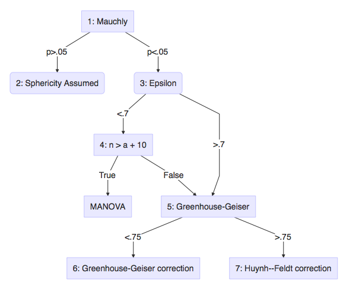
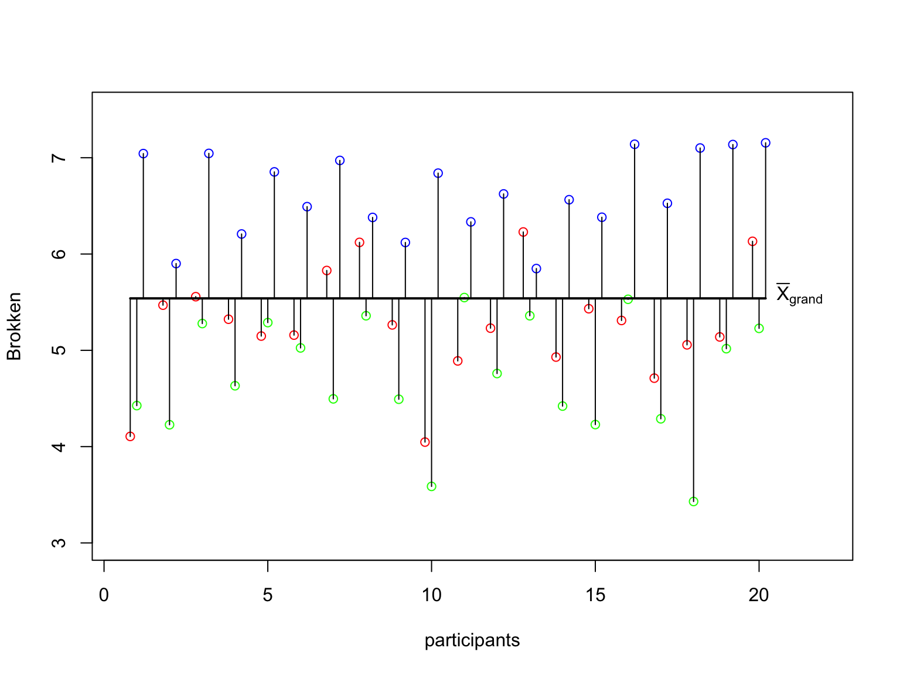
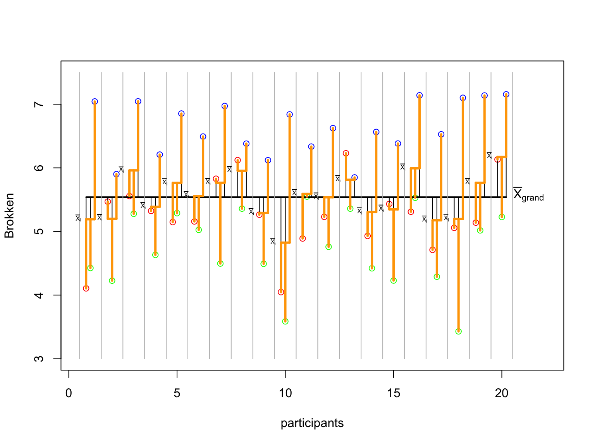
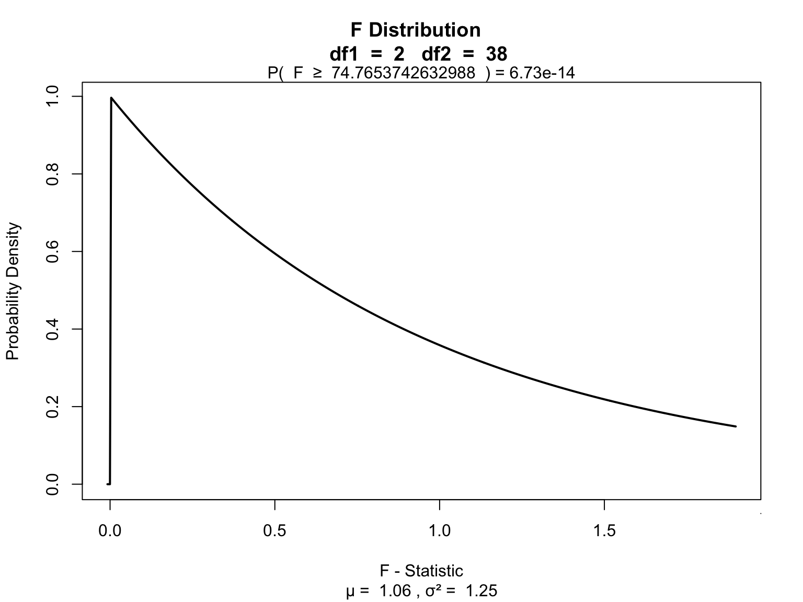

Repeated & Mixed
ANOVA
Klinkenberg
19 oct 2021
Inhoud
ANOVA
One-way repeated
One-way repeated measures ANOVA
The one-way repeated measures ANOVA analyses the variance of the model while reducing the error by the within person variance.
- 1 dependent/outcome variable
- 1 independent/predictor variable
- 2 or more levels
- All with same subjects
Assumptions
- Uni- or Multivariate
- Continuous dependent variable
- Normaly distributed
- Shapiro-Wilk
- Equality of variance within groups
- Mauchly’s test of Sphericity
Uni- or Multi- descision tree

- Field: 15.5.2, Output 15.2
- Field: Output 15.4
- Field: Jane Superbrain 15.2, Output 15.2 GG and HF.
- Field: Jane Superbrain 15.2, Sample size \(n\) is larger than \(a\) (number of levels) + 10
- Field: 15.5.4, Output 15.2
- Field: 15.5.4, Output 15.4
- Field: 15.5.4, Output 15.4
Formulas
| Variance | Sum of Squares | df | Mean Squares | F-ratio |
|---|---|---|---|---|
| Between | \({SS}_{{between}} = {SS}_{{total}} - {SS}_{{within}}\) | \({DF}_{{total}}-{DF}_{{within}}\) | \(\frac{{SS}_{{between}}}{{DF}_{{between}}}\) | |
| Within | \({SS}_{{within}} = \sum{s_i^2(n_i-1)}\) | \((n_i-1)n\) | \(\frac{{SS}_{{within}}}{{DF}_{{within}}}\) | |
| • Model | \({SS}_{{model}} = \sum{n_k(\bar{X}_k-\bar{X})^2}\) | \(k-1\) | \(\frac{{SS}_{{model}}}{{DF}_{{model}}}\) | \(\frac{{MS}_{{model}}}{{MS}_{{error}}}\) |
| • Error | \({SS}_{{error}} = {SS}_{{within}} - {SS}_{{model}}\) | \((n-1)(k-1)\) | \(\frac{{SS}_{{error}}}{{DF}_{{error}}}\) | |
| Total | \({SS}_{{total}} = s_{grand}^2(N-1)\) | \(N-1\) | \(\frac{{SS}_{{total}}}{{DF}_{{total}}}\) |
Where \(n_i\) is the number of observations per person and \(k\) is the number of conditions. These two are equal for a one-way repeated ANOVA. Furthermore \(n\) is the number of subjects per condition and \(N\) is the total number of data points \(n \times k\).
Example
Measure driving ability in a driving simulator. Test in three consecutive conditions where participants come back to attend the next condition.
- Alcohol none
- Alcohol some
- Alcohol much
The data
\({MS}_{total}\)
# Assign to individual variables
none_alc = data$none_alc
some_alc = data$some_alc
much_alc = data$much_alc
total = c(none_alc,some_alc,much_alc)\[{MS}_{total} = \frac{{SS}_{{total}}}{{DF}_{{total}}} = s_{grand}^2\]
## [1] 0.9410458\({SS}_{total}\)
\[{DF_{total}} = N-1 \\ {SS}_{{total}} = s_{grand}^2(N-1)\]
## [1] 55.5217## [1] 55.5217\({SS}_{total}\) visual
# Set offset
offset = .2
# Calculate n
n = length(none_alc)
# Create plot
plot(none_alc,
xlab = 'participants',
ylab = 'Brokken',
xlim = c(.5,22),
ylim = c(3,7.5),
col='green')
points((1:n)-offset, some_alc, col='red')
points((1:n)+offset, much_alc, col='blue')
# Add the total mean
lines(c((1-offset),(n+offset)),rep(mean(total),2),col='black',lwd=2)
segments(1:n, mean(total), 1:n, none_alc)
segments(1:n-offset, mean(total), 1:n-offset, some_alc)
segments(1:n+offset, mean(total), 1:n+offset, much_alc)
text(n+offset,mean(total),expression(bar(X)[grand]),pos=4)

\({MS}_{within}\)
\[{MS}_{within} = \frac{{SS}_{{within}}}{{DF}_{{within}}} \\ {DF}_{within} = (n_i-1)n\]
n.i = 3 # Number of mesurements per individual (none, some, much)
n = 20 # Number of mesurements per group
DF_within = (n.i - 1) * n
DF_within## [1] 40\({SS}_{within}\)
\[{SS}_{{within}} = \sum{s_i^2(n_i-1)}\]
var_pp = apply(cbind(none_alc, some_alc, much_alc),1,var)
ss_pp = var_pp * (n.i - 1)
SS_within = sum(ss_pp); SS_within## [1] 48.45032mean_pp = apply(cbind(none_alc, some_alc, much_alc),1,mean)
sum(c((none_alc - mean_pp)^2,
(some_alc - mean_pp)^2,
(much_alc - mean_pp)^2))## [1] 48.45032\({SS}_{within}\) data
\({SS}_{within}\) visual
p
# Personal means
segments(1:n-offset, mean_pp, 1:n+offset, mean_pp, col='orange', lwd=3)
# The lines show the within deviation from the personal mean.
segments(1:n-offset, mean_pp, 1:n-offset, some_alc, col='orange', lwd=3)
segments(1:n, mean_pp, 1:n, none_alc, col='orange', lwd=3)
segments(1:n+offset, mean_pp, 1:n+offset, much_alc, col='orange', lwd=3)
# Add personal means symbols
for(i in 1:n) { text(i-(offset/2), mean_pp[i], expression(bar(X)[i]), pos=2, cex=.5)}
\({MS}_{between}\)
\[{MS}_{between} = \frac{{SS}_{{between}}}{{DF}_{{between}}}\]
\[{DF}_{between}-{DF}_{{within}} \\ {SS}_{between} = {SS}_{total} - {SS}_{within}\]
## [1] 7.071382## [1] 19\({MS}_{model}\)
\[{MS}_{model} = \frac{{SS}_{{model}}}{{DF}_{{model}}} \\ {DF}_{model} = k-1\]
## [1] 2\({SS}_{model}\)
\[{SS}_{model} = \sum{n_k(\bar{X}_k-\bar{X})^2}\]
# SS model
n_k1 = length(none_alc)
n_k2 = length(some_alc)
n_k3 = length(much_alc)
# Calculate sums of squares for the model
SS_k1 = n_k1 * (mean(none_alc) - mean(total))^2
SS_k2 = n_k2 * (mean(some_alc) - mean(total))^2
SS_k3 = n_k3 * (mean(much_alc) - mean(total))^2
SS_model = sum(SS_k1, SS_k2, SS_k3)
SS_model## [1] 38.63266\({SS}_{model}\) visual
p
# Add the no alcohol mean
lines(c((1),(n)),rep(mean(none_alc),2),col='green',lwd=2)
text(n+offset,mean(none_alc),expression(bar(X)[none]),pos=4)
# With the bit alcohol mean
lines(c((1-offset),(n-offset)),rep(mean(some_alc),2),col='red',lwd=2)
text(n+offset,mean(some_alc),expression(bar(X)[some]),pos=4)
# With the much alcohol mean
lines(c((1+offset),(n+offset)),rep(mean(much_alc),2),col='blue',lwd=2)
text(n+offset,mean(much_alc),expression(bar(X)[much]),pos=4)
# The lines show the model deviation from the total mean.
segments(1:n, mean(total), 1:n, mean(none_alc), col='green')
segments(1:n-offset, mean(total), 1:n-offset, mean(some_alc), col='red')
segments(1:n+offset, mean(total), 1:n+offset, mean(much_alc), col='blue')
\({MS}_{error}\)
\[\frac{{SS}_{error}}{{DF}_{error}} \\ {DF}_{error} = (n-1)(k-1)\]
## [1] 38\({SS}_{error}\)
\[{SS}_{error} = {SS}_{within} - {SS}_{model}\]
## [1] 9.817655F ratio
\[F = \frac{{MS}_{{model}}}{{MS}_{{error}}}\]
# Calculate mean squares
MS_model = SS_model / DF_model
MS_error = SS_error / DF_error
# Calculate F statistic
F = MS_model / MS_error
F## [1] 74.76537Visualize

F.values = seq(0, 100, .01)
plot(F.values, df(F.values, DF_model, DF_error), type = "l", ylab="density", main = "H0 and HA F-distribution")
critical.value = qf(.95, DF_model, DF_error)
critical.range = seq(critical.value, 100, .01)
polygon(c(critical.range,rev(critical.range)),
c(critical.range*0, rev(df(critical.range, DF_model, DF_error, ncp = 5))), col = "darkorange")
lines(F.values, df(F.values, DF_model, DF_error, ncp = 5))
polygon(c(critical.range,rev(critical.range)),
c(critical.range*0, rev(df(critical.range, DF_model, DF_error))), col = rgb(0,1,0,1), density = 40, angle = -45)
p.range = seq(F, 100, .01)
polygon(c(p.range,rev(p.range)),
c(p.range*0, rev(df(p.range, DF_model, DF_error))), col = rgb(0,0,1,.6), density = 20)
Contrast
Planned comparisons
- Exploring differences of theoretical interest
- Higher precision
- Higher power
Post-Hoc
Unplanned comparisons
- Exploring all possible differences
- Adjust T value for inflated type 1 error
Effect size
General effect size measures
- Amount of explained variance \(R^2\) also called eta squared \(\eta^2\).
- Omega squared \(\omega^2\)
Effect sizes of contrasts or post-hoc comparisons
- Cohen’s \(r\) gives the effect size for a specific comparison
- \(r_{Contrast} = \sqrt{\frac{t^2}{t^2+{df}}}\)
- \(r_{Contrast} = \sqrt{\frac{F(1,{df}_R)}{F(1,{df}_R)+{df}_R}}\)
ANOVA factorial repeated
Factorial repeated measures ANOVA
The factorial repeated measures ANOVA analyses the variance of the model while reducing the error by the within person variance.
- 1 dependent/outcome variable
- 2 or more independent/predictor variable
- 2 or more levels
- All with same subjects
Assumptions
Same as one-way repeated measures ANOVA
Example
In this example we will again look at the amount of accidents in a car driving simulator while subjects where given varying doses of speed and alcohol. But this time we lat participants partake in all conditions. Every week subjects returned for a different experimental condition.
- Dependent variable
- Accidents
- Independent variables
- Speed
- None
- Small
- Large
- Alcohol
- None
- Small
- Large
- Speed
| person | 1_1 | 1_2 | 1_3 | 2_1 | 2_2 | 2_3 | 3_1 | 3_2 | 3_3 |
|---|---|---|---|---|---|---|---|---|---|
| 1 | 1 | ||||||||
| 2 | 2 | ||||||||
| 3 | 3 | ||||||||
| 4 | 4 | ||||||||
| 5 | 5 | ||||||||
| 6 | 6 | ||||||||
| 7 | 7 | ||||||||
| 8 | 8 | ||||||||
| 9 | 9 |
Data
Mixed design ANOVA
Mixed design
The mixed ANOVA analyses the variance of the model while reducing the error by the within person variance.
- 1 dependent/outcome variable
- 2 or more independent/predictor variable with different subjects
- 2 or more levels
- 1 or more independent/predictor variable with same subjects
- 2 or more levels
Assumptions
Same as repeated measures ANOVA and same as factorial ANOVA.
Example
- Dependent variable
- Accidents
- Independent variables
- Speed (same subjects)
- None
- Small
- Large
- Alcohol (same subjects)
- None
- Small
- Large
- Gender
- Males
- Females
- Speed (same subjects)
| person | gender | 1_1 | 1_2 | 1_3 | 2_1 | 2_2 | 2_3 | 3_1 | 3_2 | 3_3 |
|---|---|---|---|---|---|---|---|---|---|---|
| 1 | males | 1 | ||||||||
| 2 | males | 2 | ||||||||
| 3 | males | 3 | ||||||||
| 4 | males | 4 | ||||||||
| 5 | males | 5 | ||||||||
| 6 | males | 6 | ||||||||
| 7 | males | 7 | ||||||||
| 8 | males | 8 | ||||||||
| 9 | males | 9 | ||||||||
| 10 | females | 1 | ||||||||
| 12 | females | 2 | ||||||||
| 13 | females | 3 | ||||||||
| 14 | females | 4 | ||||||||
| 15 | females | 5 | ||||||||
| 16 | females | 6 | ||||||||
| 17 | females | 7 | ||||||||
| 18 | females | 8 | ||||||||
| 20 | females | 9 |
Data
End
Contact